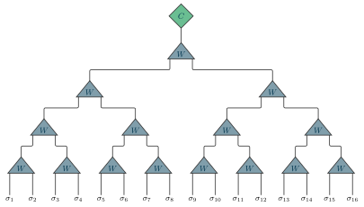

Examples / 19
Tree tensor network

A tree tensor network on sixteen sites: four tiers of isometries, and the center on top.
Each isometry W takes two indices up to one: the triangle points toward the root, which is the direction it is isometric in. It is drawn as a tree is drawn ([tree]): every tensor its own size, centered over the sites it joins, its one upper index leaving the apex and turning a corner into the base of the tensor above. Where the two meet is the grid's one rule – tensors of different extent meet once, in the middle of the sites they share – so no position in this file is worked out. Sixteen sites, eight, four, two, one.
The center is the one tensor that is not isometric, and with the last isometry taking everything to a single index it is a vector: the state's coefficients in the basis the tree has built. It spans the two middle sites only, because its one index leaves the top isometry in the middle of the tree. Move the center down a branch and the triangles it passes through turn over; the notation has the shape for that (a triangle pointing down) but this picture keeps it at the top.
The layout – tiers of triangles pointing up, each index turning a corner on its way into the tensor above – is modelled on the tree tensor network in the figures on the front page of tensornetwork.org. The drawing is this package's own; the arrangement is theirs.
The picture
Point at a line to see what it draws, or at the picture to see which line drew it.
\begin{tikzpicture} \tnstack[tree]{T}{16}{root, w16, w8, w4, w2} \tnlayer{T}{root}{7*., center/$C$/2, 7*.} \tnlayer{T}{w16}{iso/$W$/16} \tnlayer{T}{w8}{2*iso/$W$/8} \tnlayer{T}{w4}{4*iso/$W$/4} \tnlayer{T}{w2}{8*iso/$W$/2} \tnconnect[apart={root, w16, w8, w4, w2}]{T} \tnopen[label=$\sigma_{#1}$]{down}{T}\end{tikzpicture}
The whole file
\documentclass[border=4pt]{standalone}\usepackage{amsmath,amssymb}\usepackage{tikz-tensors}\input{notation}\begin{document}\begin{tikzpicture} \tnstack[tree]{T}{16}{root, w16, w8, w4, w2} \tnlayer{T}{root}{7*., center/$C$/2, 7*.} \tnlayer{T}{w16}{iso/$W$/16} \tnlayer{T}{w8}{2*iso/$W$/8} \tnlayer{T}{w4}{4*iso/$W$/4} \tnlayer{T}{w2}{8*iso/$W$/2} \tnconnect[apart={root, w16, w8, w4, w2}]{T} \tnopen[label=$\sigma_{#1}$]{down}{T}\end{tikzpicture}\end{document}